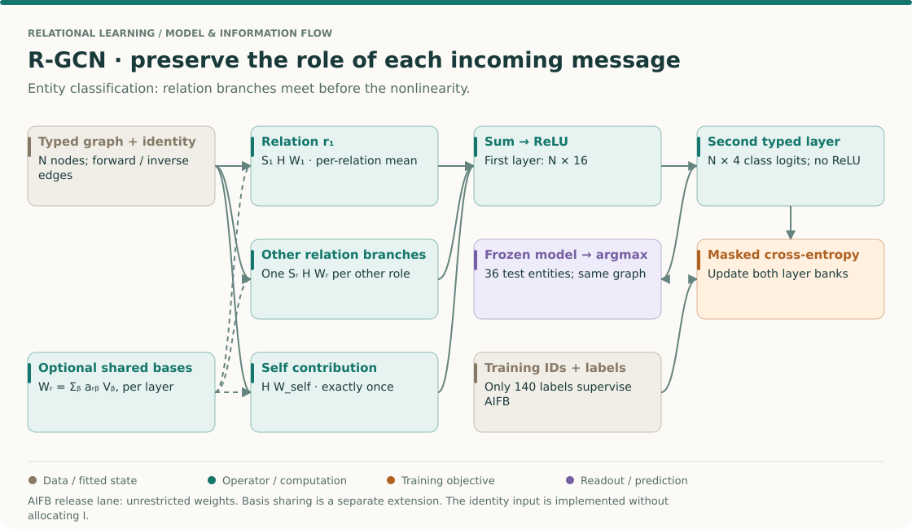
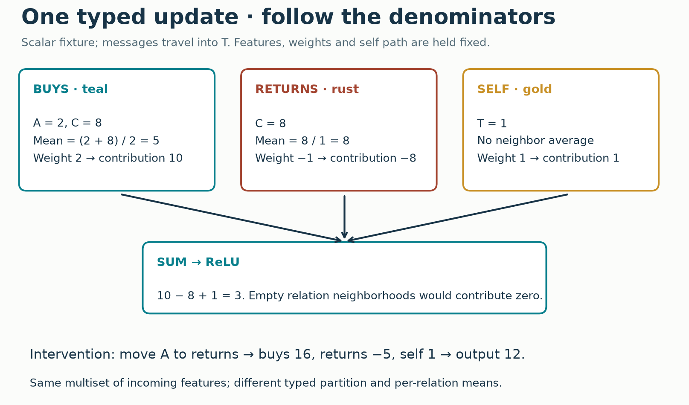
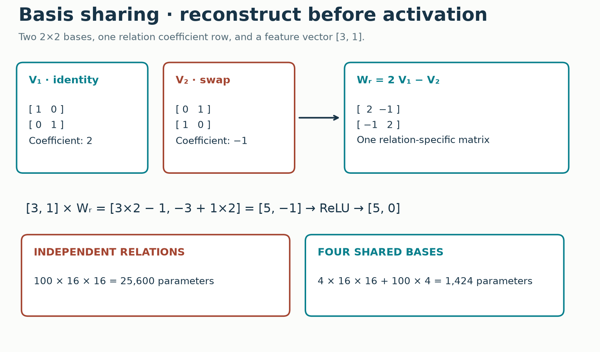
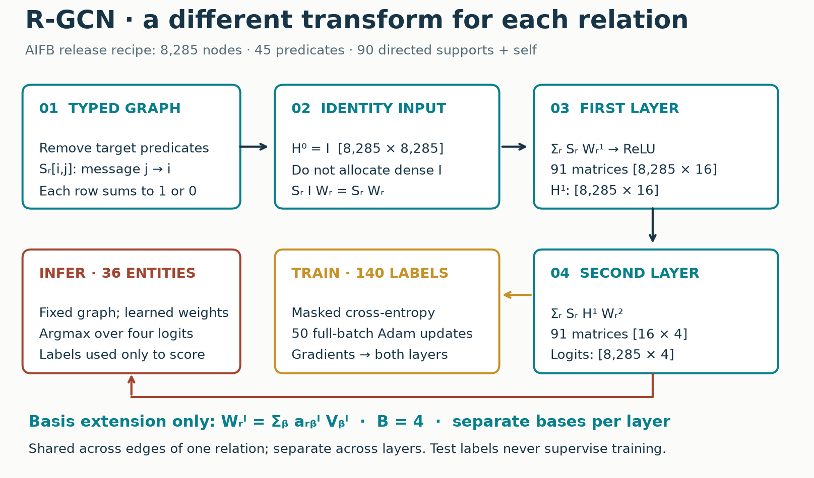
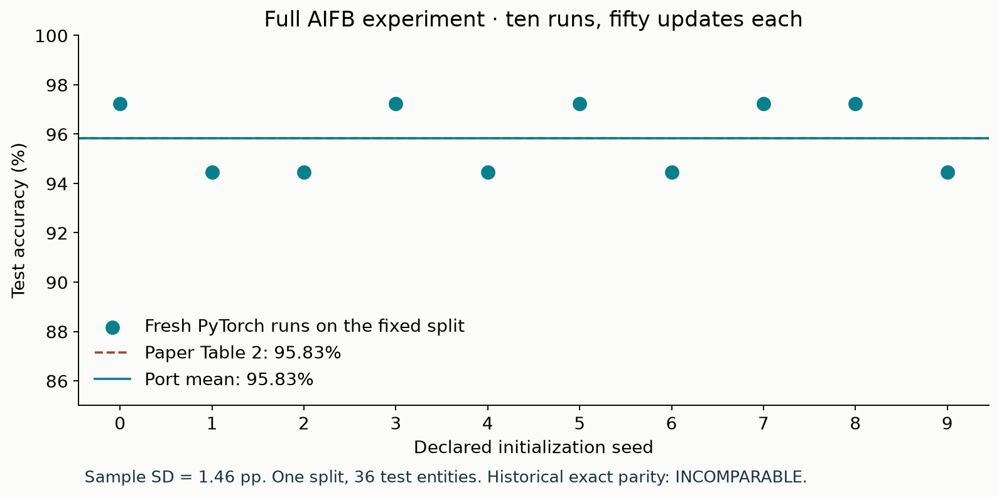

Year 3 · Quarter 2 · Lesson 091
R-GCN: make the relation change the message
Start from memory¶
Before reading, write three answers: What does a GCN share across edges? Why can held-out features participate in transductive training while held-out labels cannot? What information is lost when two foreign-key columns are merged into one unlabeled edge list?
Your win: implement a graph layer that changes its message when the relation changes, reconstruct relation weights from shared bases, and defend a full AIFB entity-classification run. The core lesson takes one sitting; the lab and paper audit are a separate practice block. You should finish with runnable code, a hand calculation, ten saved results and a written explanation.
Primary reading: Schlichtkrull et al., Modeling Relational Data with Graph Convolutional Networks, §§2–3 and §5.1. Read equation 2 for routing, equation 3 for sharing, equation 4 for sparsity, and Table 2 for the experiment. Consult the pinned author implementation when the general paper description leaves a concrete choice unresolved.
The big picture · from feature interaction to relation interaction¶
THE BIG PICTURE · 091 / TYPED TRANSFORMATIONS
Bring forward: L048 made interactions between columns explicit; L082 shared a graph transformation across neighbors. Here the edge role decides which transformation acts. Follow: typed supports → relation messages → shared hidden state → class logits → masked loss. Carry forward: L092 asks whether an entire multi-hop route should be selected before aggregation.
L048: interaction bias · L082: homogeneous convolution · L092: selected routes · Sequence map

Read the whole network before deriving its layer¶
Start at a single output: the four logits for one AIFB entity. The second layer needs the first-layer states of its typed neighbors and itself. Each of those states needs another typed neighborhood. The required computation is therefore a two-hop dependency graph, even though the final question asks about one entity. The same layer parameters are reused at every receiver; a new receiver does not create a new matrix bank.
There are two distinct kinds of sharing. A relation matrix is shared across all edges carrying that role. With basis decomposition, different relations additionally share a library of matrices. Neither is the same as sharing the parameters of layer one with layer two. Read R-GCN §2.1, Eq. 2, then §2.2, Eq. 3 with those three axes written in the margin: edges, relations, layers.
Derive what two layers can carry¶
Temporarily remove activation and self terms to inspect one path. Use row vectors. If source j reaches middle node k through relation r, then k reaches target i through relation s, that path contributes a term proportional to h_j W_r^(0) W_s^(1). The proportionality factor is the product of the two neighborhood normalization weights. Sum over every eligible intermediate and relation pair to recover the linearized two-layer update.
Now put ReLU back. Its position is between those matrices, after all of k's incoming contributions have been combined. You cannot generally replace the computation with one precomputed endpoint adjacency and one matrix. This is precisely the question that connects this lesson to HAN: a two-hop receptive field and a preselected two-hop endpoint graph are different computations.
A small order test. Let x=[1,2], W_r=diag(2,1), and W_s=[[0,1],[1,0]]. Then x W_r W_s=[2,2], while x W_s W_r=[4,1]. All coordinates stay positive, so ReLU does not obscure the difference. Edge-role order can matter even when the same two transforms appear. This is a teaching calculation, not a measurement of AIFB.
Locate the information that the model discards¶
Within one relation, a mean keeps an average transformed feature vector. If every neighbor in that relation is duplicated equally, the mean stays fixed. Across relations, the model adds those means: a rare relation does not automatically receive less total mass than a frequent one. A count feature or a different normalizer changes this information contract. Merely adding more hidden coordinates does not undo information discarded before the transformation.
Featureless AIFB uses identity as input. The model can distinguish known entities through learned identity-associated parameters, but there is no automatic input row for a newly arriving entity. Keep that limitation separate from GraphSAGE's feature-based inductive promise and from the target-label masking rule.
Try first: when does basis sharing actually save parameters?
For R matrices with d_in × d_out entries, compare R d_in d_out with B d_in d_out + R B. Savings require B(d_in d_out + R) < R d_in d_out. A small B is a restriction on diversity across relation matrices, not a guarantee of low matrix rank. Count the self transform separately if the implementation treats it outside the relation bank.
Reading checkpoint. Trace Eq. 2 to the visible relation_sum, Eq. 3 to compose_weights, and the entity-classification objective to masked_loss. Then return to the existing full AIFB protocol below. A mechanism derivation cannot fill missing historical runtime or data-identity evidence. Tomorrow, reconstruct the two-matrix order test without notes and explain why it motivates L092.
1 · An edge tells you who—and how¶
In plain terms. A purchase, a refund and a friendship should not automatically carry the same message.
In Lesson 82, a graph convolution transformed neighbors with a shared matrix. A matrix is a rectangular array that mixes input coordinates into output coordinates. Sharing that matrix across edges treats their meanings alike. This is useful for a homogeneous citation graph, but a relational database contains several kinds of connection.
Imagine Order.buyer_id → Person.id and Order.seller_id → Person.id. Both relationships connect the same pair of table types. Their meanings differ. Collapsing them to one Order → Person relation discards the buyer/seller distinction. A relation type records the role of a connection; it is not merely the type of its endpoint. A directed multigraph permits several differently typed edges between the same nodes.
R-GCN assigns a different transformation to each relation and direction. The transformation is shared across all edges of that type. It is not a separate parameter matrix for every individual edge. This is the next step from the generic message function in Lesson 81 and the graph-access contract in Lesson 90.
Predict before reading the answer. Suppose two neighbors retain exactly the same features, but their buyer/seller roles exchange. Can a relation-blind sum notice? Can R-GCN notice?
Check your reasoning
A relation-blind sum sees the same multiset of features. R-GCN can change because the features now meet different matrices. It need not change for every parameter setting: equal relation matrices or coincidentally equal transformed sums can still give equal outputs.
2 · Trace one typed update¶
In plain terms. Average messages within each relation; then add the relation contributions and the node's own contribution.
Worked example. Node A has scalar feature 2 and node C has scalar feature 8. Target T has scalar feature 1. Both A and C send a buys message to T. C also sends a returns message. Use weights W_buys=2, W_returns=−1 and W_self=1.
- The buys neighborhood has two members. Its mean is
(2+8)/2=5. The transformed contribution is5×2=10. - The returns neighborhood has one member. Its contribution is
8×(−1)=−8. - The self contribution is
1×1=1. It is added once. - Sum:
10−8+1=3. ReLU leaves 3 unchanged. ReLU, the rectified linear unit, replaces a negative coordinate by zero.

The widget holds features and weights fixed. It moves A's edge from buys to returns. Now buys contributes 8×2=16, returns contributes ((2+8)/2)×(−1)=−5, and the total becomes 12. The two denominators change. This is a relation intervention, not additional training.
Turn the arithmetic into the general rule¶
For node i at layer l, the paper writes:
h_i^(l+1) = activation( Σ_r Σ_{j ∈ N_i^r} W_r^(l) h_j^(l) / c_i,r
+ W_self^(l) h_i^(l) )
h_i is the node's feature vector. The layer superscript tells you which propagation step produced it. N_i^r is the set of sources whose messages reach i under relation r. c_i,r is a normalizer. For our entity-classification experiment it is the number of neighbors of that relation. Σ means sum. An empty neighborhood contributes zero; we never divide by zero. These choices are from the paper's equation 2 and entity-classification protocol.
The paper uses column feature vectors. Our code stores nodes as rows: H has shape N × d_in and W_r has shape d_in × d_out. The same operation becomes S_r @ H @ W_r. S_r is a sparse, row-normalized adjacency matrix. Row i, column j contains the weight of the message from j into i. Matrix multiplication is associative here, so S_r @ (H @ W_r) and (S_r @ H) @ W_r agree, up to floating-point rounding.
# Self connections are already the last support; do not add them again.
def relation_sum(supports, features, weights):
return sum(torch.sparse.mm(a, features) @ w
for a, w in zip(supports, weights))
Direction needs a convention. RDF, the Resource Description Framework, stores facts as triples. An RDF triple is (subject, predicate, object). The released loader puts its forward adjacency entry at [subject, object]. Therefore the object sends into the subject under that support. The inverse support is its transpose and carries the opposite message. Our port preserves this convention. Calling a relation “forward” without stating matrix orientation is insufficient.
Check: if buys has four neighbors and returns has one, do you divide all five messages by five? No. In this experiment, buys divides by four and returns by one. A global mean would be a different operator. In particular, summing relation means is not a mean across relations.
3 · Many relations need a sharing rule¶
In plain terms. Learn a small library of transformations, then let each relation mix that library differently.
With R relations, independent matrices use R × d_in × d_out parameters. Rare relations may have few observations with which to estimate an entire matrix. A basis is one learned matrix in a shared library. A coefficient is the scalar amount of that basis used by a particular relation. The paper's basis decomposition is:
W_r = a_r1 V_1 + a_r2 V_2 + ... + a_rB V_B
There are B basis matrices V_b, each d_in × d_out, and a coefficient table a of shape R × B. All are learned. Coefficients may be negative and need not sum to one. There is no softmax or activation between basis combination and message transformation. Layer one and layer two have their own bases; sharing is across relations within a layer.
Worked example. Let V1=[[1,0],[0,1]] and V2=[[0,1],[1,0]]. A relation with coefficients [2,−1] has matrix [[2,−1],[−1,2]]. Row feature [3,1] becomes [5,−1]. If a ReLU follows, it becomes [5,0]. Applying ReLU to each basis contribution separately would change the model.

def compose_weights(bases, coefficients):
# Sum over b; retain relation r, input i and output o.
return torch.einsum('rb,bio->rio', coefficients, bases)
The parameter count is now B × d_in × d_out + R × B. For R=100, d_in=d_out=16, B=4, independent matrices need 25,600 parameters; bases plus coefficients need 1,424. The basis dimension constrains the family of relation matrices. It does not force each matrix itself to have rank B. One full-rank basis already disproves that confusion.
Block diagonal is a different restriction¶
The paper also offers block-diagonal decomposition. Divide input and output coordinates into B groups and allow each group to interact only with its matching group. For four coordinates and two blocks:
[ a b 0 0 ]
[ c d 0 0 ] Two learned 2×2 blocks; cross-block entries are fixed zero.
[ 0 0 e f ]
[ 0 0 g h ]
This uses R × d_in × d_out / B parameters when both widths are divisible by B. It restricts coordinate mixing separately in each relation. Basis sharing instead couples the matrices of different relations. These are alternative regularizers, not two names for low-rank factorization. The full lab implements basis sharing; block diagonal is explained here but not used in AIFB.
Check: with one identity basis, every relation matrix is a scalar multiple of identity. It can still have full matrix rank. What has been restricted is the diversity of relation transformations.
4 · Model architecture: classify an entity from typed context¶

Read the figure in five steps.
- Build supports. AIFB describes an academic institution; the supervised task predicts people’s research-group affiliations. Its graph contains 8,285 entities and 45 predicates. Each predicate contributes two directions. An identity support supplies the self path, yielding 91 supports. Remove the predicates that encode the target before message passing. Normalize each support separately.
- Start without attributes. A one-hot node vector is zero everywhere except at that node's identity coordinate. Stacking these vectors gives the identity matrix
I, shape8285 × 8285. This is called the featureless setting: it still uses node identity and structure, just no supplied attributes. ComputeS_r @ W_rdirectly rather than allocating I. - Form hidden states. Layer one produces
8285 × 16activations by summing the 91 transformed supports and applying ReLU. Each relation matrix is shared across receivers. In the basis extension, reconstruct each matrix from that layer's bases first. - Make class logits. Layer two mixes typed neighborhoods of those hidden states and produces
8285 × 4logits. A logit is an unnormalized class score. Softmax turns four logits into probabilities summing to one; training cross-entropy computes this normalization internally. No extra dense classification head is needed. - Train, then infer. Cross-entropy averages the negative log probability of the correct class over only the 140 training entities. Gradients update both layers. After the fixed final epoch, argmax chooses a class for each of 36 held-out entities. Their labels never enter the loss.
A transductive experiment allows the fixed graph's held-out entities to participate in propagation. This differs from inductive prediction on genuinely new entities. An identity-based first layer has a parameter row for each known entity; adding new nodes needs an additional design decision. Edge typing alone does not solve unseen-entity generalization or point-in-time correctness.
Why the first-layer shortcut is safe¶
For any relation, S_r I W_r = S_r W_r. Concatenate the supports horizontally and stack the matrices vertically. One sparse multiplication computes their sum without constructing I. The lab checks both outputs and gradients against an explicit identity on a tiny graph.
The release also zeroes adjacency rows outside the labeled roots and their one-hop neighbors. With exactly two layers, root outputs only need hidden states at those neighbors. Retaining their full source columns preserves the required two-hop context. We preserve this optimization and independently compare it with the unpruned graph. The root identities include train and test entities; their target values are not used to prune.
5 · Reproduce a named experiment¶
In plain terms. Freeze the recipe, execute every declared run, then report the difference—even when it disappoints.
Our target is R-GCN, AIFB, Table 2: 95.83% mean test accuracy over ten runs, from the paper. Accuracy is correctly classified held-out entities divided by the number evaluated. With 36 test entities, one error changes a single run by about 2.78 percentage points. A mean can be more finely spaced, but ten seeds do not become ten independent datasets.
| Decision | Frozen full experiment |
|---|---|
| Data | Complete stripped AIFB graph, original 140/36 split, four classes |
| Target leakage | Assert affiliation and employs predicates absent |
| Input | Node identity, no supplied attributes |
| Architecture | Two R-GCN layers, hidden width 16, ReLU then class logits; no biases |
| Relations | Both directions plus one self support; independent row means |
| Weight sharing | Unrestricted matrices (--bases 0), as the AIFB release command specifies |
| Optimization | Historical Keras Adam update, learning rate .01; 50 full-batch updates |
| Regularization | No dropout or L2, following the AIFB command |
| Selection | Fixed final epoch; no test-selected seed, checkpoint or hyperparameter |
| Repetition | Ten declared fresh seeds 0–9; all results retained |
| Measurement | Mean and sample SD of test accuracy; raw predictions and loss traces |
Adam adapts parameter updates using running averages of gradients and squared gradients. Full-batch means one update uses the entire training set; here one epoch is one update. The visible optimizer preserves the historical formula, including where its small numerical-stability constant is added.
The paper describes validation-based hyperparameter tuning. We use its released final AIFB settings; we do not rerun an unspecified historical tuning search. The release's --testing mode uses all original training labels and reports the final epoch. It does not hold out 20% again at final evaluation. These distinctions are visible in the release README and archived training code.
Prediction checkpoint: before opening the results, write the difference you would expect from using fresh seeds and a different numerical backend. Would numerical closeness establish that the historical run was identical?
Executed author-reference evidence.
| Experiment | Complete runs × epochs | Mean test accuracy | Sample SD |
|---|---|---|---|
| AIFB unrestricted release port | 10 × 50 | 95.83% | 1.46 pp |
| Four-basis teaching extension | 3 × 50 | 96.30% | 1.60 pp |
The full port is +0.00 percentage points from the published 95.83%. Every seed's correct count and all 36 predictions are retained in the raw results. The seed SD describes initialization variability on this fixed split, not uncertainty across datasets. The basis extension is separate and untuned.
The standalone solution repeated all thirteen runs from a fresh data download and exactly matched the author’s ten-run predictions and loss traces. A separate clean environment with the portable dependency pins also completed all thirteen runs and obtained the same target mean.
Raw ten-run results · Basis extension · Arithmetic and gradient checks · Data and pruning audit

Scope check. This is a full-data, full-schedule reconstruction of the named AIFB release experiment. Historical exact parity is INCOMPARABLE: PyTorch replaces Keras/Theano; old seeds and unordered node mappings were not recorded; canonical RDF ordering changes the mapping of random initial values. Data is hash-pinned from a maintained mirror; split files match the author's bytes and graph statistics match the paper, but historical graph-byte identity is not established. The original historical runtime and the other three entity-classification datasets are NOT_RUN. Link-prediction tables are NOT_RUN.
A preprocessing trap we caught. RDF can contain a blank node, an entity identified only within its document. The default parser generates fresh internal IDs for these nodes. Sorting those generated IDs does not produce repeatable ordering. Our loader preserves document-local blank-node labels before sorting. Independent parses now produce identical node-order hashes, and pruned versus unpruned root outputs and training gradients agree.
Basis extension. Three separate full-schedule runs use four bases in each layer. They exercise the mechanism you implement. They are not the paper's AIFB recipe and are not a tuned comparison or evidence that basis sharing always helps. We report their scores separately. The reproduction contract records provenance, exact commands and deviations.
6 · Lab: make your implementation carry the result¶
Read lab · Download student notebook · Worked solution · Run in Colab
The notebook contains the complete loader, model, optimizer and training loop inline. It downloads only a hash-checked data archive. No hidden course-model import implements your work. Colab availability after publication is a separate delivery check, not implied by these local files.
- TODO A: reconstruct relation matrices from bases and coefficients. CHECK compares against explicit sums and tests gradient flow.
- TODO B: sum relation-wise messages with the given normalized supports. CHECK expects 3 in the worked scalar example and catches global normalization and double self loops.
- TODO C: compute classification loss using only the selected training indices. CHECK changes held-out labels and verifies zero held-out logit gradients.
- Run: first a short real-data diagnostic; then the ten-run full experiment and three-run basis extension. The latter routes gradients through TODO A as well as B and C.
- EXIT: submit both result JSON files, a relation-swap calculation and a 150–250 word protocol defense. Explain one discrepancy and what experiment would diagnose it without selecting on test labels. A printed “PASS” is not a substitute for your defense.
7 · From predicates to database paths¶
The mission is to show when preserving relational structure unlocks useful signal. R-GCN supplies a concrete mechanism: the same neighbor representation can mean something different along two foreign-key roles. It also exposes costs: relation-specific parameters, identity dependence, and averaging away multiplicity within each relation.
A useful counterexample. If all members of a relation neighborhood have the same state, repeating them leaves its mean unchanged. R-GCN with this normalizer cannot directly count those neighbors from that aggregate alone. Recall the sum-aggregation question in Lesson 88. Structural information can still enter through other paths, but relation typing does not automatically preserve counts.
Two layers compose two relation steps. For example, a person's representation can include information from another person through a shared project. The next curriculum unit studies a meta-path: a prescribed sequence of node and relation types describing such a route. First understand what this layer averages; then ask which routes and neighbors deserve more weight. This prepares the later database graph construction work without claiming that static AIFB proves temporal RDL superiority.
Return tomorrow: derive the scalar update cold, name the exact denominator, and reconstruct the [2,−1] basis example. A week later, implement the three TODOs again without the solution. Use the R-GCN reference after retrieval. Ask the teacher follow-up questions about any arrow, shape, normalization or reproduction claim you cannot defend.